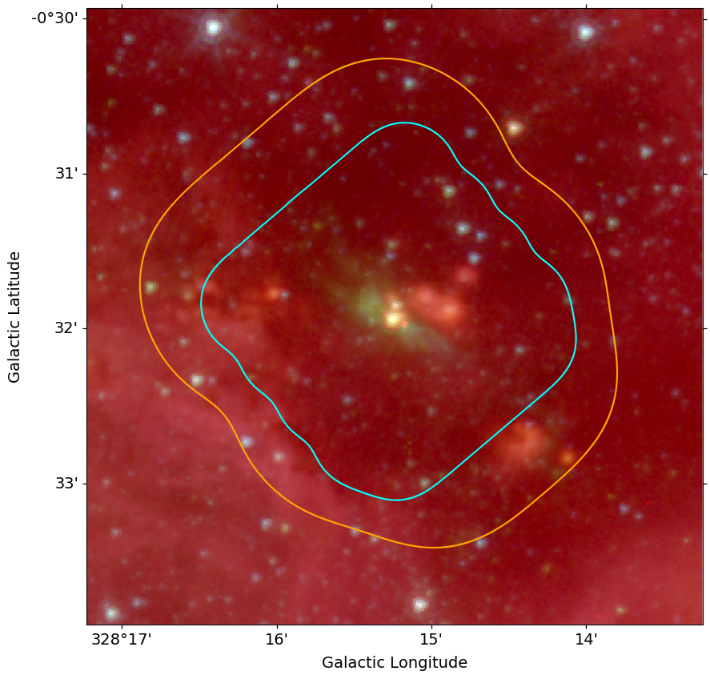
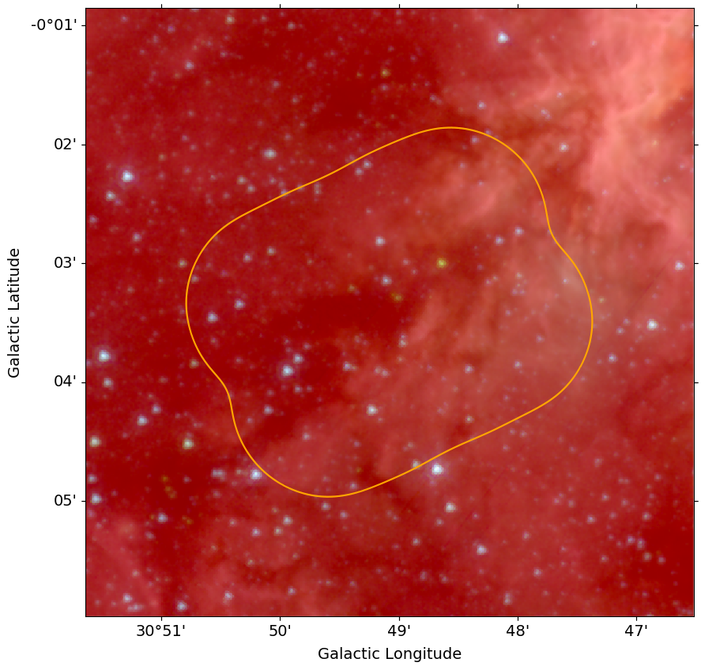
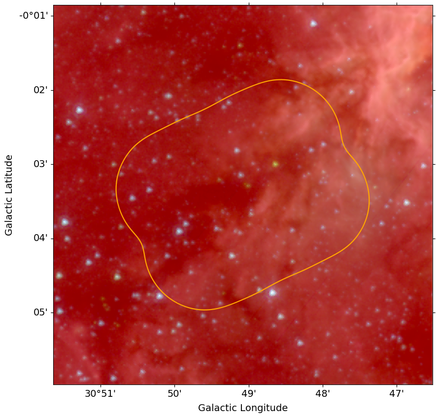
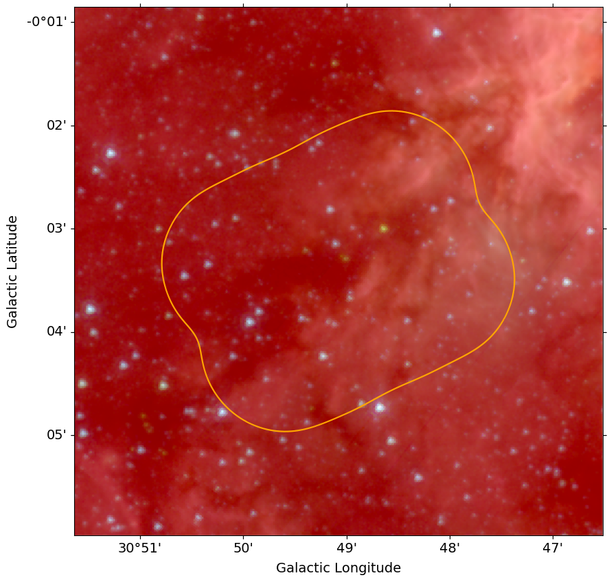

ALMA-IMF LP homepage placeholder 

Presentations:
The proposal
Presentation by Fabien Louvet
Github page:
Github organization
Background, affiliated papers, and pilot programs:
The unexpectedly large proportion of high-mass star-forming cores in a Galactic mini-starburst
The ALMA Survey of 70 μm Dark High-mass Clumps in Early Stages (ASHES). I. Pilot Survey: Clump Fragmentation
Thermal Feedback in the High-mass Star- and Cluster-forming Region W51
 
